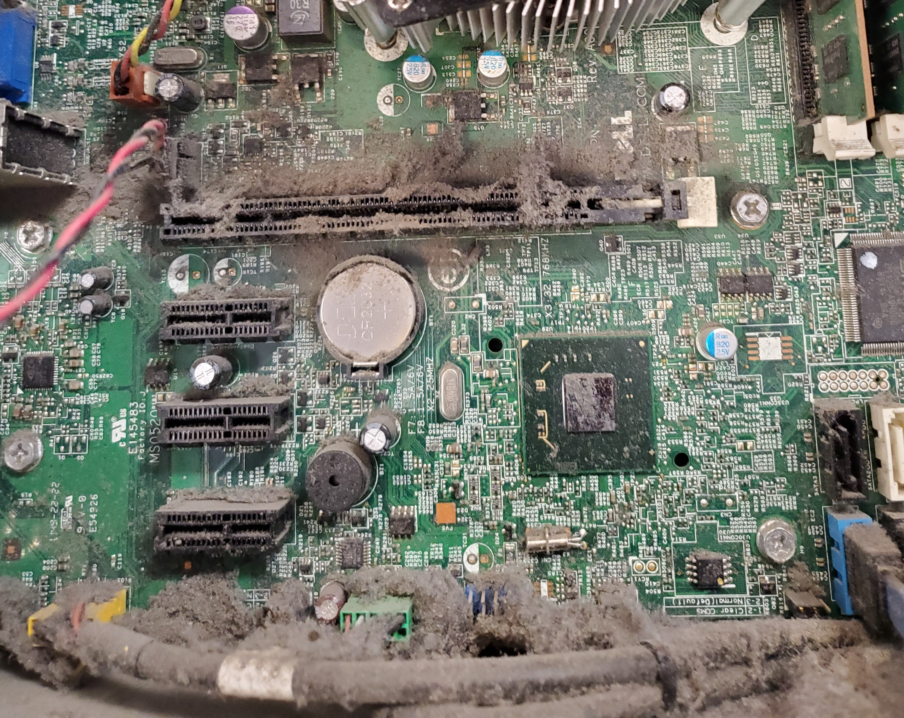

What is Required?
Although a bit of work, making contact with a local business is the first step in getting hardware. Many of these places use a recycling company that they pay to take their "old" and unwanted computers. This is where you could step in and take some or all of their recycled computers off of them for free. Once you establish a contact, get some computers, and form a school group, you are set to move on.
Now What?
- Choose Your Best Desktop for a Server
If you can get an old server, then you should totally use that, but in our case we just used a slightly powerful desktop and installed windows server on it.
- CLEAN EVERYTHING
The image below is a computer that was pulled and about to be donated. Had this been left alone, a fire could have happened eventually, so just clean everything to make sure its all safe and quiet.
- Linux or Windows Server?
We used windows server, and as of December 2019, that is all we are going to have tutorials on. That being said, if you cannot get a windows server liscense, which is understandable, then you may have to go linux. We will one day look into a linux deployment server, but as of now we are unable to help with a linux server.
- Setting Up the Server
The server is important due to the need for quick windows/linux imaging of the laptops/desktops. For our tutorials and documentation, head on over to the Documents page to read on what to do next if unsure. If what you need is not there, head on over to the Request page and request some documentation.